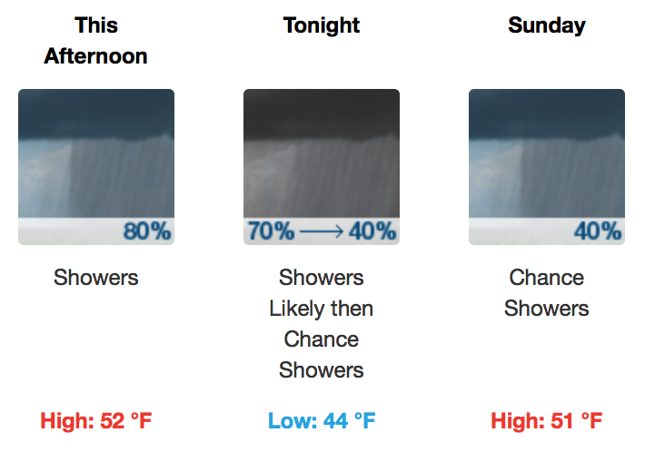
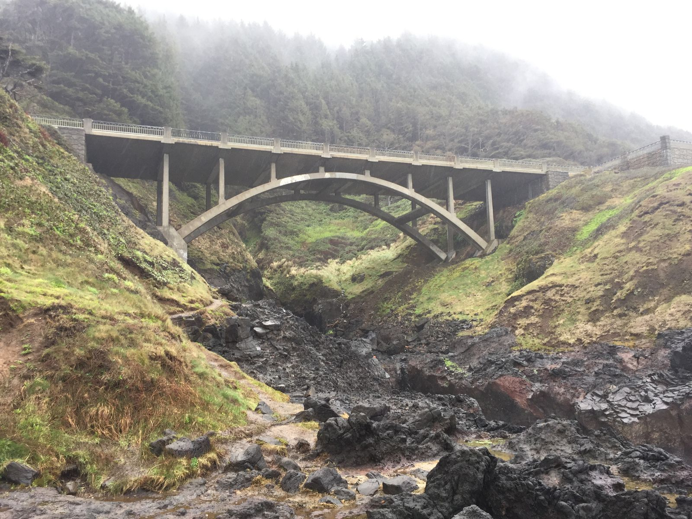
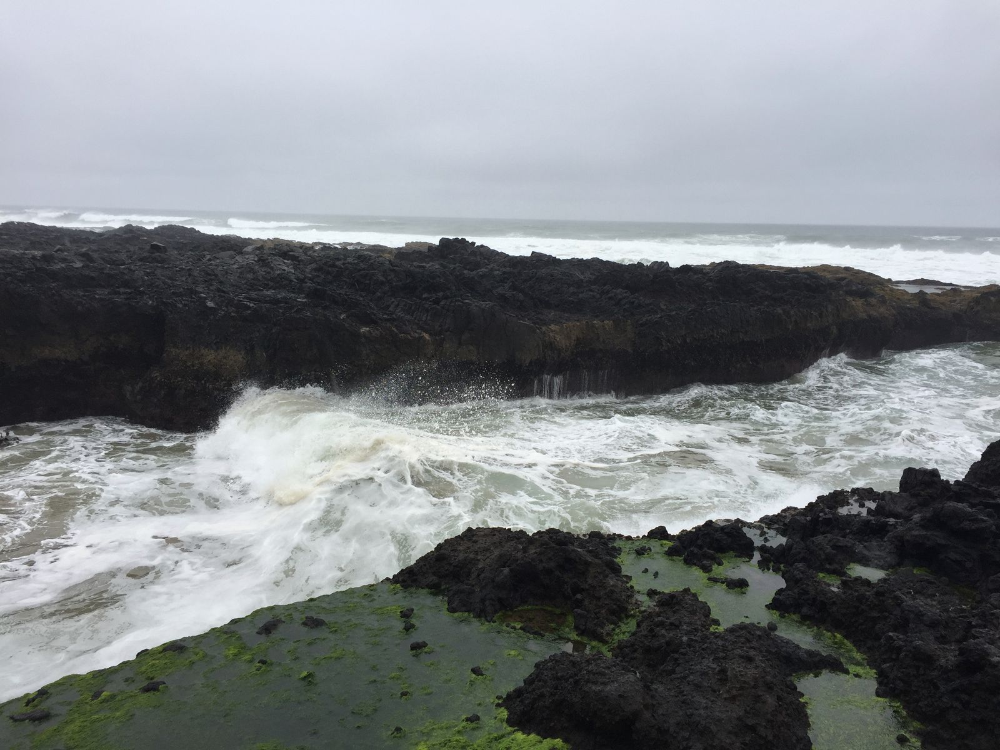

Rainy Oregon
It's just after five and I've checked into my hotel at the Adobe Resort in Yachats. It looks like there's plenty to do outside here, yet it is raining and just under 50ºF. Though they got some sun yesterday, it's generally been raining non-stop here for the past two weeks—or so the two people at reception told me. There might be better weather tomorrow, so I plan to do a short morning hike before heading into Portland.

At some point I should probably find dinner. It looks like the nearby grocery store is open until 8 and there's a restaurant in the hotel with pizza. I'm not sure what I am going to do yet. I'm feeling pretty lazy after a day of doing basically nothing but driving and snacking. Thankfully, my drive tomorrow is less than four hours.

